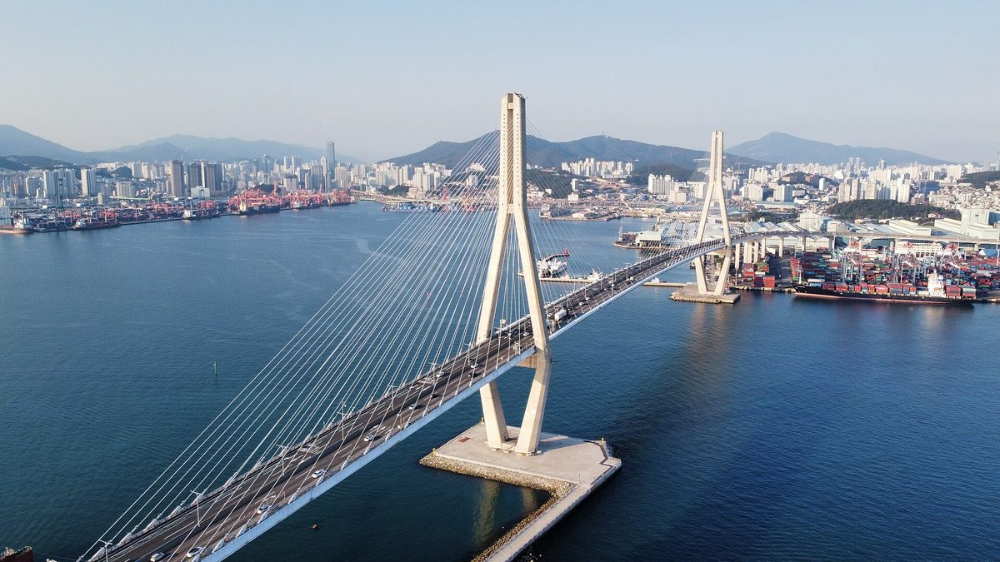

남부발전 재생에너지 민간 제안 창구에 19건 접수…세종 전의·안동 임동·평택 고덕 주민에 햇빛소득마을 컨설팅

7월 연 재생에너지 24시 클리닉 성과 공개, 사업제안 14건·컨설팅 4건·R&D 1건…부산항만공사와 항만부지 재생에너지 공동개발 협약도
한국남부발전이 민간 제안을 받는 상시 창구 재생에너지 24시 클리닉을 통해 세종시 전의면, 안동시 임동면, 평택시 고덕면 3개 지역 주민에게 햇빛소득마을 태양광 사업 컨설팅을 했다고 9일 밝혔다. 지난 7월 문을 연 이 창구에는 지금까지 사업제안 14건, 컨설팅 요청 4건, 연구개발(R&D) 제안 1건 등 모두 19건이 들어왔고, 남부발전은 안건마다 사업 타당성을 따져 맞춤 컨설팅을 했다. 가장 구체적인 결과는 부산항만공사와 맺은 항만부지 재생에너지 공동개발 협약으로, 민간이 낸 사업안을 검토하다 협력할 길을 찾은 것이다. 중소기업과는 농사와 발전을 함께 하는 영농형 태양광 R&D를 추진하며 주민 소득과 이어질 기술 과제를 구체화하고 있다. 김대종 남부발전 재생에너지개발처장은 제안이 신규 사업으로 이어지면서 민간 사업자와의 협력 기반이 단단해졌다고 말했다. 남부발전은 민간 제안에 대한 기술·경제성 검증 절차를 보완하고 지방자치단체·중소기업과의 공동사업을 단계적으로 넓힐 계획이다.
시민에너지 관점
19건 가운데 주민 쪽 사업은 3개 마을 컨설팅에 그쳐, 발전공기업의 창구가 아직은 항만부지 같은 큰 사업에 더 쏠려 있다. 컨설팅만으로는 마을이 자금과 계통 연결, 인허가 벽을 넘기 어렵다는 걱정이 나올 수 있다. 그래서 공기업의 역할은 조언에서 멈추지 말고 마을 협동조합이 지분을 갖는 사업에 장기 저리 자금과 계통 접속을 함께 붙여 주는 데까지 가야 한다 — 마을이 발전소의 주인이 되어야 수익이 지역에 남는다. 남부발전은 컨설팅한 세 마을이 실제 발전소를 갖게 되기까지의 일정과 지원 내용을 공개하는 것부터 시작해야 한다.
출처: 핀포인트뉴스 2026-11-09 구동본 기자 원문 보기
韓国南部発電の再エネ民間提案窓口に19件…世宗・全義、安東・臨東、平沢・古徳の住民に日差し所得村のコンサルティング
7月に開設した再生可能エネルギー24時クリニックの成果を公表、事業提案14件・コンサル4件・研究開発1件…釜山港湾公社と港湾用地の再エネ共同開発協約も
韓国南部発電は9日、民間の提案を受け付ける常設窓口「再生可能エネルギー24時クリニック」を通じ、世宗市全義面、安東市臨東面、平沢市古徳面の3地域の住民に、日差し所得村（ヘッビッ所得村）の太陽光事業についてコンサルティングを行ったと明らかにした。7月に開設したこの窓口にはこれまでに事業提案14件、コンサルティング要請4件、研究開発（R&D）提案1件の計19件が寄せられ、南部発電は案件ごとに事業の妥当性を検討して個別のコンサルティングを行った。最も具体的な成果は釜山港湾公社と結んだ港湾用地の再生可能エネルギー共同開発協約で、民間が出した事業案を検討する中で協力の道を見いだした。中小企業とは、農業と発電を両立する営農型太陽光の研究開発を進め、住民の所得につながる技術課題を具体化している。金大鍾（キム・デジョン）南部発電再生可能エネルギー開発処長は、提案が新規事業につながり民間事業者との協力基盤が固まったと述べた。南部発電は民間提案の技術・経済性の検証手続きを補い、自治体や中小企業との共同事業を段階的に広げる計画だ。
市民エネルギーの視点
19件のうち住民側の事業は3集落へのコンサルティングにとどまり、発電公企業の窓口はまだ港湾用地のような大型事業に偏っている。コンサルティングだけでは、集落が資金や系統接続、許認可の壁を越えるのは難しいという懸念も出るだろう。だから公企業の役割は助言で止まらず、集落の協同組合が持ち分を持つ事業に長期・低利の資金と系統接続を合わせて付けるところまで進むべきだ。集落が発電所の所有者になってこそ、収益が地域に残る。南部発電は、コンサルティングした3集落が実際に発電所を持つまでの日程と支援内容を公表することから始めるべきだ。
出典: 핀포인트뉴스 2026-11-09 구동본 기자 原文を読む
韩国南部发电可再生能源民间提案窗口收到19件…为世宗全义、安东临东、平泽古德居民提供阳光收入村咨询
公布7月开设的可再生能源24小时诊所成果，项目提案14件、咨询4件、研发1件…并与釜山港湾公社签署港口用地可再生能源共同开发协议
韩国南部发电9日表示，已通过接收民间提案的常设窗口“可再生能源24小时诊所”，为世宗市全义面、安东市临东面、平泽市古德面三个地区的居民提供“阳光收入村”光伏项目咨询。该窗口于今年7月开设，至今共收到19件，其中项目提案14件、咨询请求4件、研发提案1件，南部发电逐件评估项目可行性并提供定制咨询。最具体的成果是与釜山港湾公社签署的港口用地可再生能源共同开发协议，这是在审查民间提出的项目方案时找到的合作途径。南部发电还与中小企业推进兼顾农业与发电的农光互补研发，具体化可与居民增收挂钩的技术课题。南部发电可再生能源开发处长金大钟表示，提案转化为新项目，与民间开发商的合作基础更加牢固。南部发电计划完善对民间提案的技术和经济性验证程序，并逐步扩大与地方政府和中小企业的共同项目。
市民能源视角
19件中涉及居民的项目只有对3个村庄的咨询，发电国企的窗口目前仍偏向港口用地这类大项目。有人会担心，仅靠咨询，村庄很难跨越资金、并网和审批的门槛。因此国企的作用不应止于建议，而应进一步为村庄合作社持股的项目同时配套长期低息资金和并网接入——村庄成为电站的主人，收益才能留在当地。南部发电应首先公开这三个接受咨询的村庄真正拥有电站的时间表和支持内容。
来源: 핀포인트뉴스 2026-11-09 구동본 기자 查看原文
Korea Southern Power's Renewable Proposal Window Draws 19 Submissions; Residents in Three Villages Receive Sunlight Income Village Consulting
Results of the Renewable Energy 24-Hour Clinic opened in July: 14 project proposals, four consulting requests and one R&D proposal, plus a joint development agreement with Busan Port Authority for renewables on port land
Korea Southern Power (KOSPO) said on the 9th that it had provided consulting on Sunlight Income Village solar projects to residents of three areas, Jeonui-myeon in Sejong, Imdong-myeon in Andong and Godeok-myeon in Pyeongtaek, through its Renewable Energy 24-Hour Clinic, a standing window for proposals from the private sector. Since the window opened in July it has received 19 items in total, 14 project proposals, four requests for consulting and one research and development proposal, and KOSPO assessed the feasibility of each and offered tailored advice. The most concrete result is a joint development agreement for renewable energy on port land with Busan Port Authority, a partnership that emerged while KOSPO was reviewing a proposal submitted by a private developer. The company is also pursuing agrivoltaic R&D with small and medium-sized firms, combining farming with power generation and shaping technical projects that can be tied to residents' income. Kim Dae-jong, head of KOSPO's renewable energy development office, said proposals turning into new projects had strengthened its basis for cooperation with private developers. KOSPO plans to strengthen technical and economic checks on private proposals and gradually expand joint projects with local governments and smaller companies.
Citizen Energy View
Of the 19 items, the only resident-side work was consulting for three villages, so the state generator's window is still tilted toward large projects such as port land. Some will worry that consulting alone will not get villages over the hurdles of financing, grid connection and permits. That is why a public utility's role should not stop at advice but extend to pairing long-term, low-interest finance and grid access with projects in which village cooperatives hold the equity, because revenue stays local only when villages own the plants. KOSPO should start by publishing a timeline and the support it will give until the three villages it advised actually own power plants.
Source: 핀포인트뉴스 2026-11-09 구동본 기자 Read the original